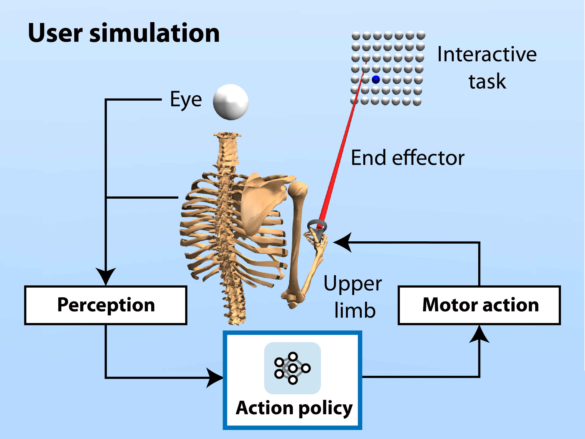
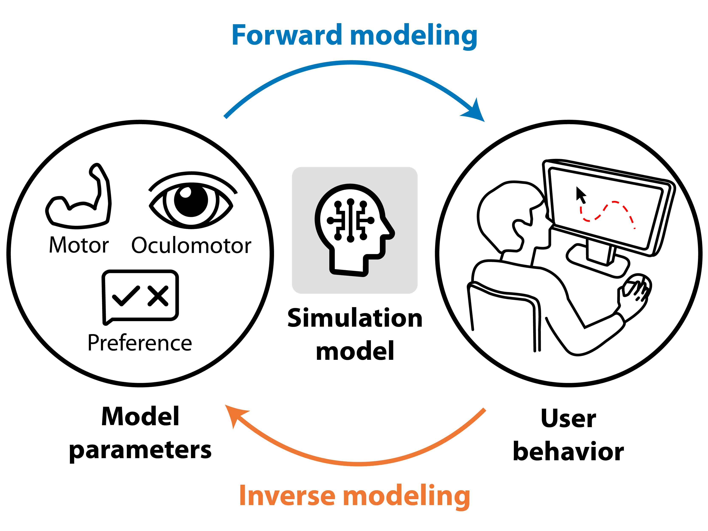
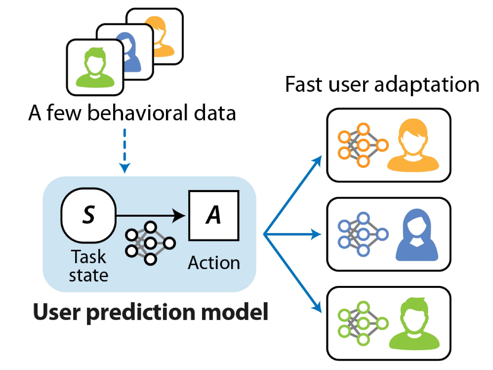

I am a postdoctoral researcher in the Computational Behavior Lab at Aalto University under the supervision of Prof. Antti Oulasvirta. I received my Ph.D. from Yonsei University under the co-advision of Prof. Jiwon Seo and Byungjoo Lee in 2022. My research interests lie at the intersection of human–computer interaction and artificial intelligence, focusing on computational modeling of human behavior to deepen our understanding and inference of individual users.
Contact: hee-seung.moon@aalto.fi
Curriculum Vitae
• Google Scholar
• Jan. 2024: ✨ 1 paper is conditionally accepted to CHI 2024.
• Aug. 2023: 🎉 I have been selected as a recipient of International Postdoc Fellowship from NRF Korea.
• Jan. 2023: ✨ 1 paper is conditionally accepted to CHI 2023 (Project Page).
• Sep. 2022: 🇫🇮 I started a new career as a postdoc in Finland (Computational Behavior Lab at Aalto University).
• Aug. 2022: 🎓 Ph.done!
• Feb. 2022: ✈️ Joined the User Interfaces Research Group at Aalto University, Finland, as a visiting scholar.
• Nov. 2021: ✨ 1 paper is conditionally accepted with minor revision to CHI 2022 (Project Page).
👇 Show More
|  |
Biomechanical simulation of user behavior Biomechanical simulations offer insightful priors on human motion, eliminating the need for intensive data collection. The simulation-based approach enhances interaction research, design, and optimization by streamlining computational efficiency and deepens our understanding of human motion. My work employs RL to optimize artificial agents with human biomechanics, facilitating studies in interactive domains like VR and collaborative robotics. • Publications › CHI 2024 |
|  |
Simulation-based inference of users Simulation-based inference harnesses compuataional models of behaviors to deepen our understanding of individual users in HCI. Yet, traditional methods are time-intensive, taking hours and days to infer parameters for single user profile. My research innovates in this space, 1) enhancing efficiency of behavior simulation across individuals and 2) applying amortized inference, to slash this duration to milliseconds, enabling instant, individual-level prediction and inference. • Publications › CHI 2023 / CHI 2022 |
|  |
Few-shot adaptation of user behavior model Variations in behavior among individuals significantly impact the accuracy of human motion predictions. While recent data-driven neural methods offer enhanced precision, they often overlook the need for effective adaptation to individual users, applying uniform model parameters universally. My research employs a meta-learning framework, uniquely enabling rapid model adaptation to previously unseen users, thus personalizing predictions. • Publications › CHI 2021 / IEEE RA-L |
International Postdoc Fellowship
• Sep. 2023 - Aug. 2024
National Research Foundation of Korea
Special Recognitions for Outstanding Reviews
CHI 2022 (1 paper), CHI 2023 (2 papers, 1 LBW), CHI 2024 (1 paper)
Excellent Academic Paper Award
• 2022
Yonsei University, South Korea
Graduate Fellowship
• 2015 - 2019
ICT Consilience Creative Program, Ministry of Science and ICT, South Korea
Undergraduate Fellowship
• 2012 - 2015
ICT Consilience Creative Program, Ministry of Science and ICT, South Korea
Minister Award
• 2014
Creative ICT Convergence Korea 2014, Ministry of Science and ICT, South Korea
Hee-Seung Moon | hee-seung.moon@aalto.fi